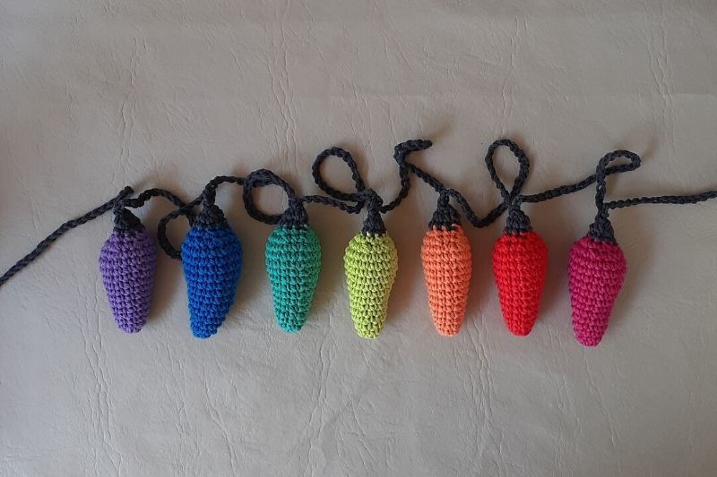

Tips: Para hacer la guirnalda, escondi el hilo de todas las luces, teji con una aguja n°4 60c,
pinche en la parte superior de la luz y teji un pb, luego 30c entre luz y luz. Y para terminar otras 60c.
Recomendaciones:
1. Este adorno podes usarlos solo con un lazo para el arbolito o como vez en la foto con forma de guirnalda.
2.Los colores de hilos/luces son a tu eleccion, pueden ser tonalidades neutras, o todas del mismo color.
3.Te imaginas enrroscar esta guirnalda con las verdaderas luces. yo me las imagino en una ventana o terraza.
Materiales
Hilo de algodón color a eleccion
Aguja de Crochet N° 3
Aguja de coser Lana
Vellon
Tijera
Abreviaturas
c:cadena
p: punto
p.enano: punto deslizado o razo.
Pb: punto bajo.
Pm: punto medio.
V o pa: vareta.
Pdv: punto doble vareta.
Aum: Aumento (2puntos en el mismo punto de base)
Dism: Disminucion (tomar 2puntos y cerrarlos juntos)
Adorno Lucecita
1. Aro Mágico con 6pb
2. Cada 2pb, 1Aum (8pb)
3. Cada 3pb, 1Aum (10pb)
4. 10pb
5. Cada 4pb, 1Aum (12pb)
6. 12pb
7. Cada 5pb, 1Aum (14pb)
8. 14pb
9. Cada 6pb, 1Aum (16pb)
10. 16pb
11. Cada 7pb, 1Aum (18pb)
12. y 13. 18pb
14. Cada 1pb, 1Dism (12pb)
15. Cada 1pb, 1Dism (8pb)
16. Cambiar color 8pb
17. Cada 2pb, 1Dism (6pb)
Cerrar con aguja de coser lana tomando los 6pb y pegar tiron.